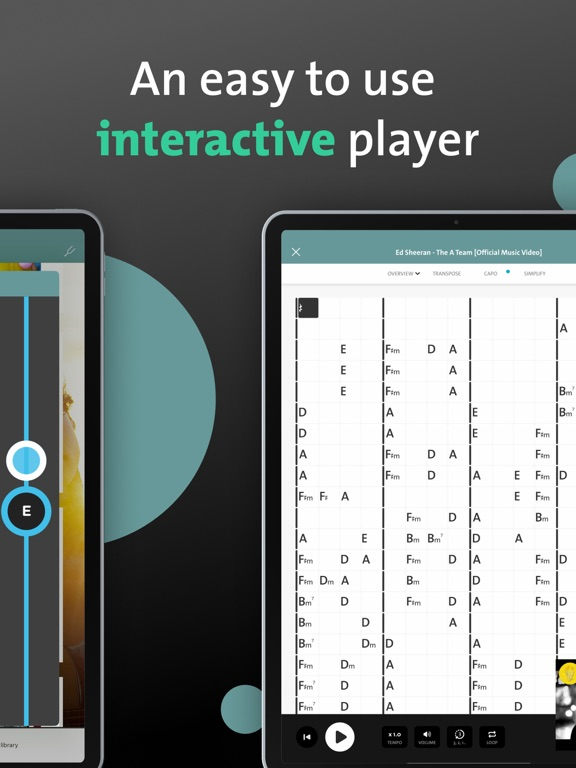

Chordify 手机版被低估的五个隐藏玩法
别只拿它当搜歌看和弦的工具。上传自己的录音、按和弦反向找歌、视图组合练习——这些藏在界面深处的功能，才是把用琴效率拉满的关键。
你以为 Chordify 就是个"搜歌→看和弦→跟着弹"的三件套？去它的官网看看产品描述，主打的也是这个卖点——说实话我之前也这么想，直到从chordify下载拿了最新版把菜单翻了个底朝天，才发现它藏着好几个大多数人没碰过的功能入口——有些甚至连官方产品页都没怎么宣传。
这篇就聊聊我折腾出的五个真正能提升练琴效率的隐藏玩法，每个都有明确的入口和适用场景，不编"传说功能"。
一、上传自己的音频让算法解析和弦
这是我最惊喜的发现。常规用法里你搜的是平台已有曲库的歌，但那个上传入口一直安静地待在首页角落，我之前以为就是个摆设。
直到有一次想扒自己乐队排练的一段 demo——搜不到、也没有视频链接——死马当活马医传了个 MP3 上去，等了大概三分钟，整首歌的和弦就被拆出来了。而且解析质量出人意料地准，因为是自己录的、人声和乐器分得清，算法比扒那种混音很乱的商业成品表现好太多。
入口就在网页版首页的 Upload 按钮，手机端点底部导航的搜索栏上方也能看到。支持常见的 MP3、WAV、FLAC 等格式，传 320kbps 或无损版本识别率最高。有个细节：纯器乐独奏的解析效果最好，人声突出的成品次之，嘈杂的现场录音最差——我传过一段同学用手机录的排练视频，背景有空调声，识别出来的和弦乱跳，后来换成单独录吉他轨就准了。

这个功能是订阅权益，免费账号点进去会直接引导订阅。但如果你手上有大量自己录的、教材配套的、或者网上买的伴奏文件，这笔订阅费花得比什么都值——之前我得手动扒和弦扒到头疼，现在直接扔给算法，不对的地方手动修两下就行。
二、概览视图与和弦图视图的组合用法
默认打开一首歌，Chordify 直接给你和弦图视图——当前和弦的大幅指法图摆在中间，下面跟着接下来两三个和弦的小预览。大部分人就停在这里了，但工具条上那个 OVERVIEW / DIAGRAMS 切换按钮才是真正的效率神器。
概览视图把整首歌的和弦按时间顺序铺成网格，小节线用竖线分开，一个黑色方块光标跟着音乐移动。第一次切过去我懵了——信息密度比和弦图视图大太多，整段走向一眼就能看完。但练熟了之后才发现，两个视图配合着用才是正道：
- 初学一首歌先开概览：光听音乐，眼睛跟着黑方块走，什么都不弹，建立"哪段和弦密集、哪段重复"的直觉。第二遍嘴上念和弦名（C！Am！F！），练换挡预判。
- 上手阶段切和弦图：指法忘了一眼搞定大图，不用停下来回忆手指怎么放。
- 熟练阶段切回概览：跟光标走，逐步脱谱。你会发现这时候看的已经不是"按哪个弦"，而是"和弦什么时候换"——这才是跟弹的真正门槛。
我之前只开和弦图视图，每换一个和弦就低头看指法，根本顾不上听和弦切换的节奏。切换组合用两周后，背和弦走向的速度至少快了一倍。网页端的概览视图比手机端好用，因为屏幕大网格铺得开；但手机端竖屏上有人更爱只看和弦行字母，各取所需。
三、简化和弦与减速练习的联动
遇到一首歌一个小节挤了两个和弦、手指根本来不及换怎么办？大部分人直接跳过找简单的歌，但 Chordify 藏着两个可以组合使用的练习辅助。
第一个是简化和弦功能——在播放器的设置里（网页端在和弦区上方，手机端在工具条齿轮图标），能把复杂和弦（比如 Cmaj7、Am7b5）自动降级成三和弦版本。我之前扒一首爵士曲目，原曲和弦带一堆延伸音，手指根本按不过来，简化后直接变成 C、Am、F、G 的进行，先把节奏跟下来再说。
第二个是减速练习——同样在播放设置里，可以把播放速度降到 50% 甚至更低，而且不改变音高。这个功能本身不算隐蔽，但很少有人把它和简化和弦组合用。我的做法是：先开简化和弦 → 速度降到 60% → 跟弹三遍没问题了 → 关简化、保持慢速 → 再三遍 → 最后恢复原速。这个递进比直接硬啃原曲友好太多，特别适合练那些和弦变换密集的段落。
有个小坑：减速功能是免费的，但简化和弦在某些版本里可能只对订阅用户开放，取决于你用的是网页版还是哪个平台的客户端。
四、手动修正解析不准的和弦
算法不是万能的。我上传过一段乐队排练的 demo，算法把一个 C7 识别成了 Cmaj，一开始没注意，跟着弹了几遍总觉得不对。
后来才发现，解析完的每个和弦都可以点——网页端点和弦名会弹出编辑框，手机端长按和弦方块可以手动改。改完保存，整个跟弹序列就同步更新了。
这个功能藏得真深，后来去chordify文档翻了一下才发现官方文档里提了一句但没做引导。如果你是个对和弦准确性比较敏感的人（比如要扒谱拿去排练），一定要养成"听完先扫一遍和弦行"的习惯，发现明显不对的直接改。比手动从头扒快太多，也比信任算法结果瞎弹强。
五、按和弦反向找歌
这个功能我到现在还在用，入口藏在搜索栏的一个小图标里——不是直接搜歌名，而是让你输入和弦进行，比如 C → Am → F → G，然后列出用这个进行的歌。
听起来好像没什么用？但你想一下：练琴练到某个和弦进行突然觉得好听，想多找几首用这个进行的歌来巩固手感，这个反查就是绝配。我之前练 6415 进行，用这个功能搜出来十几首不同风格的歌——流行、摇滚、甚至一首老歌——直接拉进练习列表，换着弹不枯燥。
一个别踩的坑
说完好的，说一个我踩过的坑：上传音频的解析队列有时候会卡住。我传过一个 20MB 的 WAV 文件，等了十分钟没反应，以为崩了关了页面，后来重新传才发现其实已经解析完了，只是队列没有推送。解决办法是：上传后别立刻关页面，等它跳转到播放器再走；如果卡住了，退出重进上传记录页面能看到已完成的解析结果。
收尾
Chordify 这些隐藏功能有个共同特点：都不是产品主打的卖点——主打的是"3600 万首歌自动识别和弦"，但真正让它从"搜和弦工具"变成"练琴辅助平台"的，恰恰是这些藏在角落的入口。
相关整理资料在GitHub、Gitee、GitCode三个平台都能找到，按需取用。把它用透，别只做那个"搜一首歌跟弹三遍就关"的人。